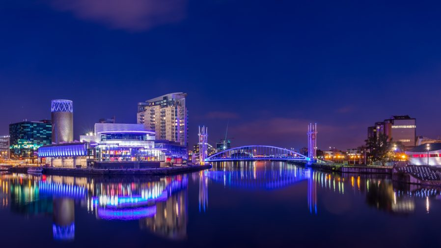

Regional spotlight: Manchester’s digital transformation

Manchester is the largest city region economy outside London. Its vibrant tech sector plays an important role in that growth, which is in turn underpinned by robust digital infrastructure.
Greater Manchester is a £5bn digital powerhouse with sub-sector strengths in cybersecurity, AI, ecommerce, fintech, gaming and creative.
It has proven fertile ground for the more than 10,000 digital and tech businesses based in Greater Manchester, who collectively raised a record £532m from investors in 2022, according to Dealroom data.
Of those, around 1,500 are high-growth companies – more than in the West Midlands, West Yorkshire or the Edinburgh area.
Its innovative businesses generated more than 69,000 creative, digital and tech sector roles advertised in Greater Manchester last year.
MediaCityUK at Salford Quays, home to the BBC, has helped put Greater Manchester on the map, attracting swathes of talented creatives, entrepreneurs and skilled workers to the region. It is also a case study of the area’s digital transformation over the past decade.
In 2010, the year before the BBC’s relocation, the area’s digital creative sector employed 6,310 people. By 2019, that figure had more than doubled to over 15,000.
“Greater Manchester is a tech hub with a proven track record and high growth that helps the city attract the country’s brightest digital workers,” says Garry Birchall, relationship director, Greater Manchester, at Lloyds Bank.
“From strong support networks to high calibre blue chip companies, Greater Manchester is well positioned to continue its digital transformation.”
Join our mailing list
About Us
Inspire tech is a blog site designed to provide you with trending news occuring the world of technology and many more.
Join our mailing list to stay updated.